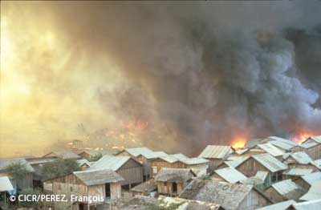

REGLEMENTATION DES ARMES A L’AIDE DE CONVENTION SPECIFIQUE

 Les conventions spécifiques peuvent interdire l’usage d’une arme ou en limiter l’usage. Elles peuvent également être encore plus exigeantes en interdisant le stockage ou la production de l’arme.
Les conventions spécifiques peuvent interdire l’usage d’une arme ou en limiter l’usage. Elles peuvent également être encore plus exigeantes en interdisant le stockage ou la production de l’arme.
 Un Etat doit avoir ratifié une convention pour qu’elle lui soit opposable.
Un Etat doit avoir ratifié une convention pour qu’elle lui soit opposable.
 Les armes dont l’emploi est interdit :
Les armes dont l’emploi est interdit :
- Les armes à sous-munitions :
La Convention sur les armes à sous-munitions de 2008 interdit :- d’employer des armes à sous munitions ;
- de mettre au point, de produire, d’acquérir, de stocker, de conserver ou de transférer des armes à sous munitions ;
- d’inciter quiconque à s’engager dans toute activité interdite en vertu de la Convention.
- Les armes bactériologiques ou biologiques
Le Protocole de Genève de 1925 interdit l’utilisation d’armes bactériologiques. En 1972, la Convention sur l’interdiction des armes bactériologiques est venue compléter cet instrument en interdisant :- de mettre au point, de fabriquer, de stocker, ou d’acquérir des armes bactériologiques
- de transmettre des armes bactériologiques.
La règle coutumière 73 interdit également l’utilisation d’armes chimiques. - Les mines anti personnel
Le Protocole II (tel que modifié en 1996) à la Convention sur les armes classiques de 1980 n’interdit pas de façon générale l’utilisation des mines antipersonnel mais en règlemente l’usage et oblige les Etats à prendre des mesures concrètes de protection (ex : signaler).
La Convention d’Ottawa sur les mines antipersonnel de 1997 interdit :- l’emploi de manière générale des mines antipersonnel
- le stockage, la production et le transfert de mines antipersonnel
- d’inciter quiconque à s’engager dans toute activité interdite en vertu de la Convention.
- Les armes chimiques
Le Protocole de Genève de 1925 interdit l’utilisation d’armes chimiques.
En 1993, la Convention sur l’interdiction des armes chimiques a interdit l’emploi des armes chimiques mais aussi :- de mettre au point, de fabriquer, de stocker, ou d’acquérir des armes chimiques
- de transmettre des armes chimiques.
La règle coutumière 74 interdit également l’utilisation d’armes chimiques. - Autres armes :
- les projectiles d’un poids inférieur à 400 grammes
-> Droit international coutumier : règle 78 - les balles dum-dum
-> Déclaration de la Haye de 1899
-> Droit international coutumier : règle 77 - les poisons et armes empoisonnées
-> Règlement de la Haye de 1907, article 23
-> Droit international coutumier : règle 72 - les projectiles à éclats non localisables
-> Protocole I à la Convention sur les armes classiques de 1980
-> Droit international coutumier : règle 79
- les projectiles d’un poids inférieur à 400 grammes

 Les armes dont l’emploi est limité :
Les armes dont l’emploi est limité :
- Les mines et les torpilles sous-marines
La Convention de la Haye (VIII) de 1907 interdit de placer des mines non amarrées (sauf si inoffensive après 1h) ou d’utiliser des torpilles qui ne deviennent pas inoffensifs lorsqu’elles manquent leur but. - Les armes incendiaires
Le Protocole III à la Convention sur les armes classiques de 1980 réglemente l’usage des armes incendiaires. De manière générale, les armes incendiaires ne peuvent pas être utilisées contre la population civile et l’environnement. Les règles coutumières 84 et 85 règlementent également l’utilisation des armes incendiaires. - Les pièges terrestres et autres dispositifs
Le Protocole II à la Convention sur les armes classiques de 1980 autorise l’usage de pièges et autres dispositifs à condition qu’ils ne soient pas attachés ou associés à des emblèmes, des signes protecteurs, des malades, des blessés, des tombes, des animaux,…. Les règles coutumières 80 à 83 règlementent également l’utilisation des pièges terrestres et autres dispositifs. - Les armes à laser aveuglantes
Le Protocole IV à la Convention sur les armes classiques de 1980 interdit l’utilisation des armes à laser si l’unique but est de provoquer la cécité permanente. Dans les autres cas, l’usage est permis. Par ailleurs, une règle coutumière reprend cette limitation (règle 86).